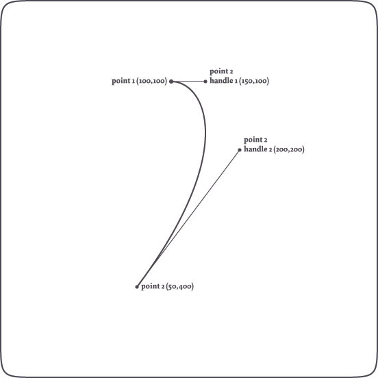
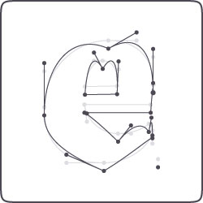
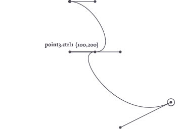
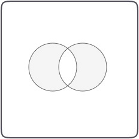
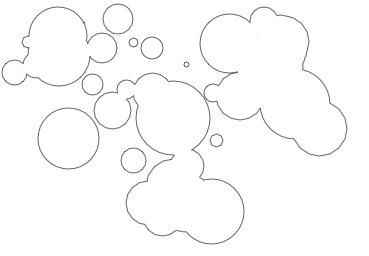

- Manipulating points on a path
- Path mathematics
- Compound paths: union, intersection, difference
- Clamping paths
- Applying filter-like effects to paths
Paths in PlotDevice are made up of Bezier curves. Bezier curves are commonly applied in computer graphics to draw curves. A Bezier curve is defined by a starting point, an ending point, and two control handles that describe those points’ vector. The first handle describes the forward curvature of the starting point, the second handle the backward curvature of the second point.
For example:
with bezier(100, 100, fill=None, stroke=0, close=False) as path: curveto(150, 100, 200, 200, 50, 400)
Draws the following curve:

The path will be filled and closed by default, without a stroke color.
We use nofill(), autoclosepath() and stroke() to get a plain visualization.
Bezier math in PlotDevice
In PlotDevice, you have access to all the points on a path and to all of their control handles. This way, you can transform paths on the fly, and even manipulate type as well (using the textpath() comand). Additionally, you can perform a number of math operations on paths (for example finding out what the x and y coordinate would be of a point halfway down the path) and unite or intersect different paths.
Manipulating Paths
Each of the PlotDevice shape commands (oval(), rect(), etc.) returns a path. This path is actually a list of points, in which each point (or PathElement) has certain properties that you can manipulate. This way you can retrieve or edit the coordinates for each point, the coordinates of its control handles, and the kind of points you are dealing with (straight line, curve, pen move).
This is the path and its points returned from the textpath() command, for the character e in the Dolly typeface: |  This is the same path, but modified. The location of each point in the path is translated downwards. |
font("Dolly-Bold", 300) path = textpath("e", 200, 200) bezier(path) |
font("Dolly-Bold", 300) path = textpath("e", 200, 200) points = [] for point in path: point.y += 20 points.append(point) bezier(points) |
Looping through all the points
As the above example shows, you can easily manipulate a path by looping through all of the points in the path with a for-loop, before actually drawing the path.
path = textpath("hello", 100, 100) points = [] for point in path: # --> Manipulate points here points.append(point) bezier(points)
with bezier(100, 100, draw=False) as path: curveto(150, 100, 200, 200, 50, 400) points = [] for point in path: # --> Manipulate points here points.append(point) bezier(points)
Manipulating points
Each point in the path is a PathElement object with the following attributes:
- point.x: the x-coordinate or horizontal location.
- point.y: the y-coordinate or vertical location.
- point.cmd: the type of line segment, either
LINETO,CURVETO,MOVETOorCLOSE, - point.ctrl1.x: if
CURVETO, the x-coordinate of the first control handle of the curve. - point.ctrl1.y: if
CURVETO, the y-coordinate of the first control handle of the curve. - point.ctrl2.x: the x-coordinate of the second control handle.
- point.ctrl2.y: the y-coordinate of the second control handle.
The handles are useful for paths that consist of multiple Bezier curves. The ctrl1 handle of a point controls how the curve connects to the previous point, the ctrl2 handle how the curve connects to the next point.
For example:
with bezier(100,100, fill=None, stroke=1, close=False) as path: curveto(150, 100, 200, 200, 150, 200) curveto(100, 200, 200, 350, 300, 300) print path[1].ctrl1.x

Example
The following example manipulates a text path, letting each curving point droop a bit (let’s hope the guys at Underware don’t freak when they see what happened their beautiful typeface)! Some more advanced math could create a handwritten variation of the text, or a text in which character looks different each time.

font("Dolly-Bold", 100) path = textpath("broken", 200, 200) points = [] for point in path: if point.cmd == CURVETO: point.ctrl2.x += 5 point.ctrl2.y -= 10 point.y += 5 points.append(point) bezier(points)
Path Mathematics
Paths in PlotDevice consist of Bezier curves. Each curve has a starting point and an ending point, and control handles. But what if we want to know the location of a point on the path that is not one of these, but somewhere in between? What is the location of halfway the a curve for example? A path in PlotDevice has some interesting methods we can use:
path.points(amount=100)
path.point(t)
path.addpoint(t)
The path.points() method returns a list containing amount points along the path. In the same way the path.point() method returns a single point at t, which is a number between 0.0 and 1.0 representing the time on the path. The path.addpoint() inserts a new point at t on the path.
A path also has the following properties:
- path.length: returns the total length of the path.
- path.contours: a list of separate contours in the path (these are paths as
well).
These speed-optimized commands are extremely useful when calculating orbits of animated elements moving down an invisible path in an animation, when creating custom type like the LetterKnitter, when growing grass on shapes, and so on and so on.
A special thanks goes to professor F. De Smedt at the Free University of Brussels for his
integration and interpolation algorithms (also check the de Casteljau’s algorithm).

Finding points on a path
The example above is an illustration of how points on a path can be found with t (a number between 0.0 and 1.0), which represents time on the path. When t is 0.5, this means halfway the path. 0.0 is the origin of the path, 1.0 the end.
The code:
with bezier(100, 100, fill=None, stroke=0, close=False) as path: curveto(150, 100, 200, 150, 150, 200) curveto(50, 250, 200, 350, 400, 400) for t in range(11): pt = path.point(0.1*t) oval(pt.x-2, pt.y-2, 4, 4)
And it’s even easier like this:
for pt in path.points(11): oval(pt.x-2, pt.y-2, 4, 4)
It’s easy to create path filters this way (in analogy to image filters). Here are
some good examples.
Inserting points on a path
Injecting new points in the path is equally easy:
nofill() with bezier(100, 500, stroke=0.5, close=False) as path: curveto(200,250, 600,600, 400,300) path.addpoint(0.25) stroke(0.2) for point in path: oval(point.x-4, point.y-4, 8, 8)

Contours in a path
A path is basically made up of segments: two points and the curve in between. A group of segments that has a beginning and an ending, or is closed, is a contour. Character glyphs are a composite of contours (for example: the inner and outer oval of the character ‘o’ are two contours). In typography it’s often useful to get the separate contours.
fontsize(50) path = textpath("contours", 10, 100) for contour in path.contours: bezier(contour, stroke=random(0.5), fill=None)
Compound paths
Paths in PlotDevice support so-called boolean operations. This means you can create a new compound path from a combination of other paths. This is useful if you want to create a shape from a combination of other shapes (like ovals and rectangles) and then flatten the group into a single path. Manipulating a single shape is much easier and faster than manipulating a group of shapes.
path1.union(path2, flatness=0.6)
path1.intersect(path2, flatness=0.6)
path1.difference(path2, flatness=0.6)
Each of the three methods returns a new path combined from the two given paths. The way in which the new path is traced differs for each method, as you can observe below:

|
Union traces and merges the two paths, removing any overlapping parts. nofill() stroke(0) path1 = oval(40, 40, 80, 80, draw=False) path2 = oval(90, 40, 80, 80, draw=False) compound = path1.union(path2) bezier(compound) |

|
Intersect traces the overlapping region and removes everything else. nofill() stroke(0) path1 = oval(40, 40, 80, 80, draw=False) path2 = oval(90, 40, 80, 80, draw=False) compound = path1.intersect(path2) bezier(compound)
|
 |
Difference subtracts the second shape from the first shape. nofill() stroke(0) path1 = oval(40, 40, 80, 80, draw=False) path2 = oval(90, 40, 80, 80, draw=False) compound = path1.difference(path2) bezier(compound)
|
|  |
XOR traces non-overlapping regions, excluding any areas that overlap. fill(0.8) stroke(0) path1 = oval(40, 40, 80, 80, draw=False) path2 = oval(90, 40, 80, 80, draw=False) compound = path1.xor(path2) bezier(compound) |
The returned path can be manipulated like any other path in PlotDevice, you can fill() and stroke() it, rotate() it and put it (or multiple copies of it) onscreen with bezier().
One thing to note is that the compound path will not contain any curves, rather, it is made up of numerous straight line segments (we say that the path is flattened). Each of the compound methods has an optional flatness parameter. The lower it gets, the more line segments will be drawn (and hence the smoother the resulting shape).
Flattening stack
With a for-loop we can keep adding new paths to the compound path. In the example below, we create a number of circles varying in size, and append them to one flattened compound path:
compound = None for i in range(50): r = random(75) path = oval(random(300), random(200), r, r, draw=False) if not compound: compound = path compound = compound.union(path) bezier(compound, fill=None, stroke=0)

Using a Transform object
It’s easy enough to draw transformed and colored copies of the compound path, but what if we want to rotate and scale the individual shapes before flattening them? We can use the Transform object in PlotDevice for this purpose.
# We construct our indivual shape in the top-left corner. # This is where corner-mode transforms originate. # We'll later on place the eventual compound path # where we want it with translate(). path = rect(-10, 0, 20, 100, draw=False) # Let's chip away small piece of the rectangle: path = path.difference(rect(-15, 80, 20, 15, draw=False)) # Create a rotation transform we'll repeatedly apply to a path t = Transform() t.rotate(20) compound = path for i in range(17): # Before adding the rectangle shape to # the flattened compound, we rotate it a bit. path = t.apply(path) compound = compound.union(path) translate(275, 275) nofill() stroke(0) bezier(compound)

Clamping paths
Paths in PlotDevice can be forced to fit a bounding box. Then as the size of the box is adjusted the path will stretch accordingly. This reverse logic is useful in some situations where a path needs to exactly fit an area and we don’t want to be bothered with creating the shape in exactly the right proportions or at the right position.
path.fit(x=None, y=None, width=None, height=None, stretch=False)
All of the parameters are optional so you can define any combination of them:
- x: the path will be positioned at the specified x value.
- y: the path will be positioned at the specified y value.
- width: the path will be of the specified width.
- height: the path will be of the specified height.
- stretch: if both width and height are defined, either stretch the path or keep the aspect ratio.